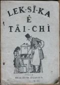

Languages
台文
｜
中文
｜
日本語
｜
English
字體
小
｜
中
｜
大
首頁
/
白話字數位典藏
白話字數位典藏全文檢索
查詢模式
選擇年代
清國時代(1885-1895)
日本時代(1895-1945)
戰後(1945-1969)
1885-1895
1896-1905
1906-1915
1916-1925
1926-1935
1936-1945
1946-1955
1956-1965
1966-1969
1970-1980
1980-1990
1990-2000
2000-2010
2010-
選擇文類
詩
散文
小說
戲劇
傳記
選擇作者
陳清忠
陳清義
編輯部
柯設偕
吳天命
明有德
偕叡廉
周天來
劉華義
王守勇
林茂生
陳添旺
王占魁
柯維思
賴仁聲
陳瓊琚
雪峰逸嵐
吳清鎰
郭水龍
蕭樂善
許水露
葉金木
陳金然
章王由
廖得
鄭連坤
潘道榮
楊士養
梁秀德
劉約翰
周淑慧
高金聲
林燕臣
黃六點
蔡愛義
許有才
主筆
巴克禮
陳鳩水
郭朝成
張基全
陳明清
陳能通
拾穗生
顏振聲
卓恆利
傳道局
胡文池
劉主安
鄭兒玉
Google Search
Yahoo Search
全部
刊名
標題
標題(教羅)
全文
全文(教羅)
作者
第50頁，共53頁(共1,058筆資料) 0.76807808876038sec
1
...
48
49
50
51
52
53
To Page
GO
文字列表
圖文列表
排序
日期
文類
刊名
作者
影像

[1955-1 淡水中學白話字史料(修編) 文類-小說 作者--/-]
(24)
Lek-sī-ka的代誌 [ Lek-sī-ka ê tāi-chì ]
...
[1963-12 台灣教會公報 文類-小說 作者--/-]
聖誕的禮物 [ SÈNG-TÀN Ê LÉ-MI̍H ]
Normal 0 0 2 false false false MicrosoftInternetExplorer4 /* Style Definitions */ table.MsoⁿormalTable {mso-style-name:表格內文; mso-tstyle-rowband-size:0; mso-tstyle-colband-size:0; mso-style-noshow:yes; mso-s...
[1954-1 淡水中學白話字史料(編修) 文類-小說 作者--/-]
(24)
Âng Lô-pek [ Âng Lô-pek ]
...
[1934-11 台灣教會公報 文類-小說 作者--/-]
甚物上gâu [ Sím-mi̍h siōng gâu ]
III. 甚物上gâu (L. P. T. ) 1934. 11，no. 596，pp. 15-16 有一擺，有5枝的指頭仔teh開會議，相佮參詳講，咱中間甚物人通做頭來管轄攏總的指頭仔。 大ku母起來就講兄弟仔，我想我會堪得做頭來管；因為我上有路用，閣上有力！設使若欲提一本冊也是我家己，恁著四個；所以我，佇恁中間上有力！ 指指講，干焦有力有甚物路用？恁看我不論甚物時我著攏出頭。若是人毋知路也是我共伊報路，罵囡仔也是我共伊指，若無我，你大ku母比看lè！ 中指徛起來就講，恁所講是攏展恁的本事若定，你看我遮懸；又閣我不時攏徛佇恁中間是佇中央，恁兩爿攏是我跟隨的部下。 ...
[1952-12 台灣教會公報 文類-戲劇 作者--/-]
四粒種子 [ Sì-lia̍p chéng-chí ]
Normal 0 0 2 false false false MicrosoftInternetExplorer4 /* Style Definitions */ table.MsoⁿormalTable {mso-style-name:表格內文; mso-tstyle-rowband-size:0; mso-tstyle-colband-size:0; mso-style-noshow:yes; mso-s...
[不詳 台大楊雲萍文庫白話字史料(編修) 文類-傳記 作者--/-]
(11)
主耶穌事略 [ Chú Iâ-so͘ Sū-lio̍k ]
...
[1897-9 台南府城教會報 文類-傳記 作者--/-]
Sun-tîm-to [ Sun-tîm-to ]
Sun-tîm-to1897.09 150 卷 p.69-70Tī大德國ê南爿撒克斯省德斯丁城，有一人名Sun-tîm-to，伊tī西曆1700年就是中國康熙ê時陣出世。伊ê祖上是做德國ê大官員，入救世教ê人；伊本身自細漢就真敬虔熱心拜上帝。伊也是大才調博學ê人，入出名書院讀冊濟濟年，bat幾若國ê文字腔口；所讀ê冊雖然真濟樣，若是伊致意專就是真理ê冊。伊ê親戚真ài伊著學習國法律例ê冊，thang出身去做官來世襲in序大人ê官爵，得著富貴名聲。若是Sun-tîm-to立志ài傳道救人。到1、20歲就出書院，去法國遊歷；21歲倒轉去in本城德斯丁。當時Mô͘-lia̍p-oá教會ê人，為著道理...
[1901-3 台南府城教會報 文類-傳記 作者--/-]
宋牧師娘ê小傳 [ Sòng Bo̍k-su-niû ê Sió-toān ]
宋牧師娘ê小傳1901.03 192卷 p.19-20 基督女徒以利莎白，就是牧師宋中堅 ê賢內助。當主後1864年4月初3出世佇英國蘇格籣ê Kai-loē-su城。伊所得著ê性質不止伶俐，拄仔5歲就學業；有歷過小，中，大這3間學校；到19歲伊所學習ê就成就。見若歷年考試，出榜攏是排佇懸ê等級。後來就紲入醫院講究醫學，佇遐攏共講究5年久，醫術也有不止精光。到beh卒業ê時男女做伙考試，赴考--ê共有80人，總是考了伊做頭名。Hit時拄仔24歲。Siāng彼年伊有過來台灣，出力學台灣ê腔口；到過年台灣話就不止gâu講gâu聽，人情世事也嶄然知影。為著體貼上帝好生ê恩德致到真無閒，施格外ê恩典致...
[1907-8 台南府城教會報 文類-傳記 作者--/-]
徐先生春枝ê小傳 [ Chhî sian-siⁿ Chhun-ki ê Sió-toān ]
徐先生春枝ê小傳1907.08 269卷 p.60-61春枝徐先生是鳳山縣，竹仔腳下pho͘庄ê人，細漢死老父，老母koh嫁；hit時無thang依倚，姑不chiong著去佮人toà ，做工趁食，伊ê頭家是竹仔腳庄Hoan-pô-chek (番婆叔)，hit時伊得著道理就續chhoā伊去聽。Tī同治十年也bat讀過小學，拜呂清暉做先生。治1873年3月16號，就是同治12年2月8日，對李牧師受洗禮入聖教；hit時抵20歲。到同治13年台南ê大學欠學生，人看伊是可取，大家舉薦--伊，就hō͘牧師叫伊來府城讀冊，學習道理，資質iáu好，所以比別人不止gâu 讀。光緒6年就出業，hit時先生28歲。...
[1907-9 台南府城教會報 文類-傳記 作者--/-]
台南長老黃月德ê小傳 [ Tâi-lâm Tiúⁿ-ló N̂g Goa̍t-tek ê Sió-toān ]
台南長老黃月德ê小傳1907.09 270卷 p.67台南城黃月德去天--裡--啦！雖然人咱無koh看著，總是伊ê模樣iáu tī--teh。伊有來聽道理，tī 1881年，hit時38歲，甘牧師行洗禮hō͘伊；到1896年hō͘兄弟姊妹揀伊做執事，後來高升長老。滿任，眾人留伊，伊就koh盡長老ê職到一世人。近來起胃病傷重，就tī西曆8月2日離開世間，享壽65歲。這人無tī--teh，實在 thang煩惱，伊盡忠服事教會，教會失落伊ê幫贊，常常暗chīⁿ 幫助散hiong人，今hiah-ê人無thang koh受伊ê好款待--啦！In家內自然iáu有憂悶，thang歡喜thang受安慰--ê,...
[1908-1 台南府城教會報 文類-傳記 作者--/-]
羅Khèng-hoâi先生小傳 [ Lô͘ Khèng-hoâi Sian-siⁿ Sió-toān ]
羅Khèng-hoâi先生ê小傳1908.01 274卷 p.5-6 佇1870年伊出世佇台中ê潭仔墘ê大埔厝莊。細漢ê時老父是作穡人；伊13歲有讀3年ê冊，十六歲就佮老父作穡。到20歲有搬落來邱厝仔莊徛起chi̍t年；就閣紲佇橋仔頭莊作田耕穡。Hit年伊22歲，真慘；3月死老父，8月死chi̍t个第二ê小弟，12月死老母。對按呢就無作穡。佇hit時兄弟七人伊是siāng-大ê，第四个予人過房siāng厝內；其餘5个小弟攏伊chhiâⁿ-tî ê。對 hit時嫌厝歹蹛，就閣徙佇公館仔莊，徛佇遐嫌無趁錢，就徙來東大墩Khó-pîⁿ蹛。拄著日本人beh來，就毋敢蹛佇公所ê所在；就閣徙過莊去，就徙來...
[1908-2 台南府城教會報 文類-傳記 作者--/-]
傳道先生ê小傳 [ Thoân-tō Sian-siⁿ ê Sió-toān ]
傳道先生ê小傳(N̂g Sìn-kî先生記ê.)1908.02 275卷 p.10 1. 黃Chok-pang先生屬佇嘉義ê教會，大溪厝莊ê人，出世佇1869年，自幼無父，七八歲就無母。 佮伊ê胞兄出外佮人蹛，予人倩做小可工。 捌chi̍t擺拄著較重ê病，僕ê先父chhoā伊去醫館就近醫生醫治；醫好倒來，先父切意苦勸伊反悔歸主。先生本是靈巧ê人，就hit時反悔決意綴主，也殷勤學習羅馬文佮漢文。聽道理無偌久，就熱心服事主。先父看伊信主ê模樣，知伊m̄是親像平常信主ê人，對hit時就舉薦伊入大學讀冊，備辦通做主ê工。先生ê做人佮人無仝，伊ê年歲雖然是少，品行端方氣慨。對伊入學就殷勤讀冊暝日無厭，...
[1909-5 台南府城教會報 文類-傳記 作者--/-]
梁沈先生小傳 [ Niû Tîm Sian-seⁿ Sió-toān ]
梁沈先生小傳1909.05 290卷 p.38先生是屬彰化教會秀水庄ê人。出世tī明治11年。老父是作穡人，所以先生自細也是作穡，m̄ bat讀冊。到16歲ê時得著道理，是因為穡場kap信主ê人ê穡場做伙；tuì án-ni聽著基督ê福音就反悔來拜上帝。20歲入教會，21歲娶先生娘。Tī教會不止熱心，續hō͘會友敬伊當長老ê職。後來人看伊真活動，就舉薦伊入大學。Tī學內受教示3年就出來做灣裡家教會傳道理kap教學ê工一年久；也不止有利益教會kap hia ê學生--仔。自koh入大學一年久，chiah卒業去做坑口教會ê先生。Toahià年半久就染著肺病，食藥無啥功效。教師會派伊去toà鹿港，是...
[1909-6 台南府城教會報 文類-傳記 作者--/-]
許進傳ê小傳 [ Khó͘ Chìn-thoân ê Sió-toān ]
許進傳Ê小傳1909.06 291卷 p.45-46長老出世tī 1840年12月26日，企起tī彰化街。長老自細做工就不止殷勤，也盡有孝父母。Bat一擺老母病沈重偌久，伊就服事無離身邊，進奉茶湯。有時捧藥beh hō͘老母食，老母的確m̄食；伊看老母hiah艱苦，家己想beh kā伊分hit ê艱苦是bē會，就續替伊食藥；是beh hō͘老母ê心歡喜。也食初一、十五齋，kiám大頓hō͘老母食，是因為家內散hiong。較早tang時伊bat聽見傳道吳文彬講道理，伊ê心想ài beh趁，m̄-kú老母teh阻擋，所以m̄敢koh去。差不多hit時tú著家內kāu病痛續死3、4個囡仔，bē免ti...
[1909-9 台南府城教會報 文類-傳記 作者--/-]
顏清華ê小傳 [ Giâm Chheng-hoâ ê Sió-toān ]
嚴清華Ê小傳1909.09 294卷 p.73清華亦名佛仔，伊tī細漢ê時有入小學讀冊，家事不止散，所以到16歲，姑不chiong著退學去hō͘人chhiàⁿ。有佮伊ê頭家相佮去廣東，無久就koh轉--來。到20歲就娶某，hit年偕牧師抵到淡水，伊就去探伊愛討看有頭路抑無。偕牧師chhiàⁿ--伊，hit-tia̍p伊攏m̄ 知聖教ê道理是甚物款。後來漸漸得著偕牧師ê教示，就反悔改變來信主，而且洗禮入教會。án-ni算是北部第一個入教--ê。 後來偕牧師接納伊做學生教示道理，無久就去做傳道，有tiàm 幾若位ê拜堂。到26歲ê時合偕牧師四界設教；到31歲就鬥教大學，做大學ê先生；到34歲有升做...
[1911-7 台南府城教會報 文類-傳記 作者--/-]
黃嘉智ê小傳 [ N̂g Ka-tì ê Sió-toān ]
黃嘉智ê 小傳 四十六年前，tī主後1865年，馬醫生kap 杜牧師對廈門過來台灣傳道設教。 hit時有一個少年人姓黃名嘉智kap in來； 伊本是漳州石馬 ê人，對打馬字牧師受洗禮。 Hit-霎 ê時陣，台灣ê人iáu-boē有人拜上帝。為著 hit時馬醫生被人革逐soá去打狗設醫館， 黃先生也kap伊去，iú-goân 做伊ê 助手，禮拜日續講道理hō͘人聽。三四年後馬醫生koh 倒轉來台南府， 打狗行--裡 ê人就央託伊請一個萬醫生來打狗替伊ê缺。 萬醫生歡喜來咱ê 醫館行醫； m̄-kú 醫館內ê代誌攏是黃先生料理。無loā-久萬醫生去廈門，kah伊ê小弟來接伊ê 缺；有人稱呼伊做小萬...
[1914-4 台灣教會報 文類-傳記 作者--/-]
紀念李牧師小傳 [ Kì-liām Lí Bo̍k-su Sió-toān ]
紀念。李牧師的小傳。 1914.04 349卷 p.6 三月9號大稻埕的牧師李壬水有過往，10號有出葬。Taⁿ將伊的來歷來小可講起記佇教會報，予眾兄弟姊妹會看。 李牧師出世佇崙仔頂，家內真艱苦。伊7歲的時父母攏死。伊就蹛佇伊的嬸兜。總是伊的嬸無好款待伊，予伊佇遐真艱苦。後來伊就出去予人倩做長工，亦有佮人thoā淡薄字。後來就去溪尾食舖做外掌三四年的久。後來就去行船，做押載。三擺船摃破，性命險險無去；路尾擺物紲予人搶去。後來伊有去內山共人記提數。佇遐3年的久就閣轉來崙仔頂。佇崙仔頂伊有拄著破病3年的久，後來有佮人學做司公。彼時有食阿片。 閣無偌久伊有聽見嚴清華傳道師講道理。對彼霎伊就...
[1915-1 台灣教會報 文類-傳記 作者--/-]
胡肇基小傳 [ Ô͘ Tiāu-ki ê Sió-toān ]
胡肇基ê小傳1915.01 358卷 p.3-4Lîm Chhip-hi記傳道先生胡古，字名肇基，本是台南廳曾文胡厝寮?ê人，也是咱南部傳道ê老先生--lah！出世tī 1849年，對細漢ê時就失落父母，到10外歲ê時陣就hō͘伊ê兄chhoā伊落阿里港kā人做長工，過無幾年kap李牧師toà,牧師省察伊信主好品行，就牽成伊當傳道ê職。 到25歲就娶傳道黃深河 ê第2查某子名Hâm來相幫贊，上帝也交帶伊培養8 個查某子kap煞尾2個後生到成人，boē bat 1個無入學校讀冊。伊ê大子現時tī福音書院讀冊，細子tī醫館學醫生。當伊做傳道頭尾倚40外年，歷過真濟任所，boē bat聽著伊kap會...
[1915-2 台灣教會報 文類-傳記 作者--/-]
楊Lāu-seng小傳 [ Iûⁿ Lāu-seng Sió-toān ]
楊Lāu-seng小傳1915.02 359卷 p.4楊Lāu-seng(人較常叫伊憨兄)，屬石雨傘ê教會，tī 1881年，就是牧師頭一擺去後山設教會，hit-tia̍p 伊受洗禮，也有擔當執事kap長老ê職。後--來教會真冷淡，真少人來禮拜，只有伊1人bat白話字 thang讀詩kap聖冊hō͘人聽。總--是伊出力鼓舞，照伊所會來講hō͘人聽，也教人bat 字，教會略略仔較興，較大面是對伊ê盡忠。又koh牧師抑是姑娘若過--去，伊gâu chì接in；有時過山到來平埔ê所在，chhoā in 到拜堂。舊年過往，hit時m̄是甚mih破病，kan-ta 因為伊ê子過身，對án-ni煩惱到過頭...
[1915-3 台灣教會報 文類-傳記 作者--/-]
楊福春小傳 [ Iûⁿ Hok-chhun Sió-toān ]
楊福春ê小傳1915.03 360卷 p.8-9楊君福春本成是二林人。主降生1874 年就出世。伊ê老父做糊紙ê工藝，子亦學這號 ê頭路。Hit 時糊紙ê工算是好趁，楊--先生bat kā我講，20年前1月日會趁13箍。tú--著hit時二林1個兄弟，就是扑銀ê江兄講道理hō͘伊聽，楊福春就知影糊紙是逆天，就m̄-ài做。伊ê老父kā伊扑到真thiám,就克苦koh來做，m̄-kú暗靜寫tī伊所糊ê燈1句就是：「獲罪有天無所逃。」 主顧koāⁿ轉--來，看較詳細就gông-ngia̍h,走來問：「寫án-ni beh 代？」 老父問子，子著認，煞hō͘伊扑到烏青。 Hit時阮toà tī彰化，...
第50頁，共53頁(共1,058筆資料)
1
...
48
49
50
51
52
53
To Page
GO
數位典藏國家型科技計劃
拓展台灣數位典藏計畫
版權所有 國立台灣師範大學 台灣文化及語言文學研究所©2008
10610 台北市和平東路一段162號│TEL 02-7734-5516│Fax 02-2358-2461
計劃簡介
典藏特色
執行架構
計畫典藏數位化流程
成員介紹
台灣白話字發展簡介
巴克禮牧師與《台灣教會公報》
廈門話字典-杜嘉德
白話字教學-打馬字
中國南方白話字發展
台灣基督教長老教會簡表
台灣基督教長老教會教會歷史委員會
《北部台灣基督長老教會教會ê歷史》
關於陳清忠
白話字文學：台灣文學的早春